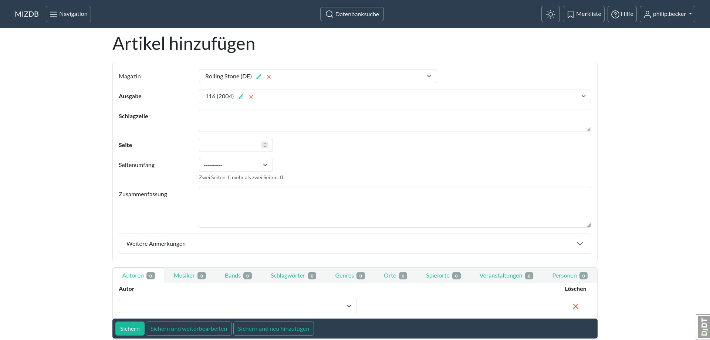
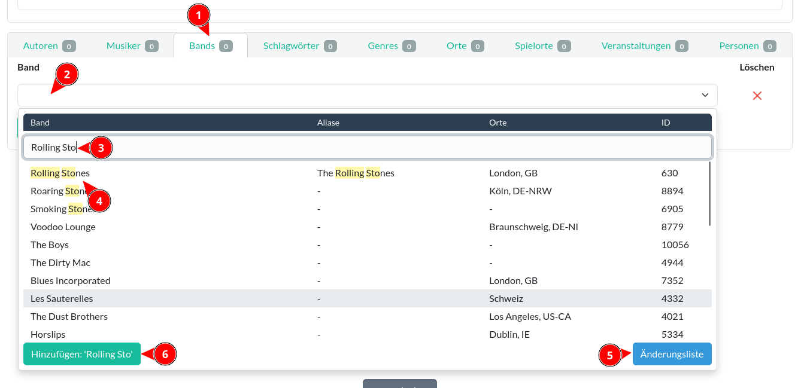
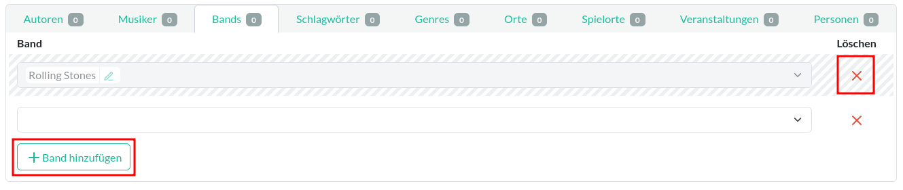

Erfassung von Artikeln
Bei der Erfassung ist es deine Aufgabe, die wichtigsten Informationen, die in einem Artikel enthalten sind, in die Datenbank einzufügen, sodass der Artikel bei einer Suche wiedergefunden werden kann; behandelt der Artikel ein bestimmtes Thema, so muss der Artikel als Ergebnis bei einer Datenbank-Recherche zu diesem Thema auftauchen. Anhand der Daten, die du zu dem Artikel in die Datenbank eingetragen hast, kann der Recherchierende entscheiden, ob der Artikel für sie/ihn interessant sein könnte.
Die Erfassung der Zeitungsartikel ist recht unkompliziert und ist damit gut für Anfänger als Einleitung in die Arbeit mit der Datenbank geeignet.
Erklärung an einem Beispiel
Für ein Beispiel nehmen wir mal an, dass du einen Artikel aus einem Heft des "Rolling Stone" Magazins erfassen willst. Um mit der Erfassung zu beginnen, solltest du zuerst die Datenbank nach vorhandenen Artikeln dieses Heftes durchsuchen.
Vorhandene Artikel suchen
Bevor du einen neuen Artikel hinzufügst, solltest du erst schauen, ob dieser schon in der Datenbank existiert. Ist der Artikel bereits erfasst, solltest du ihn nicht noch einmal eintragen.
So suchst du nach den Artikeln eines Heftes:
- im Index/Hauptmenü auf "Artikel" klicken
- im Suchformular auf "Erweiterte Suchoptionen anzeigen" klicken
- im Suchformular das Feld "Magazin" anklicken, den Namen des Magazins eintippen und dann das entsprechende Magazin aus der Liste auswählen
- danach im Feld "Ausgabe" das Jahr der Ausgabe eingeben und die entsprechende Ausgabe auswählen
- auf "Suchen" klicken
Daraufhin werden dir die Artikel des Heftes angezeigt, die bereits in der Datenbank eingetragen wurden.

{kind=link}
{kind=link}
Hinweis: Dropdown-Feld
Mehr Informationen zur Verwendung eines Dropdown-Feldes findest du hier: Bedienelement#Kombinationsfeld.
Tipp: Die Suche spart dir Arbeit
Durch die Suche werden die Angaben zu Magazin und Ausgabe im Suchformular an die Formulare für neue Artikel weitergereicht und dort in die entsprechenden Felder automatisch eingefügt. Dadurch ersparst du dir etwas Arbeit.
Neuen Artikel erstellen
Nun suchst du dir aus der Zeitschrift den Artikel heraus, der noch nicht in die Datenbank eingetragen wurde und den du erfassen willst (siehe auch: Welche Artikel müssen erfasst werden). Um mit der Erfassung zu beginnen, klicke auf der Übersichtsseite der Artikel auf den Knopf "Artikel hinzufügen". Es wird ein leeres Formular angezeigt, in das du die Daten des Artikels eintragen kannst.


{kind=link}
Zunächst solltest du die Grunddaten des Artikels eintragen, damit man anhand der Daten im Artikel-Datensatz zu dem "echten" Artikel in der physischen Zeitschrift gelangen kann. Dazu gibst du das Magazin, die Ausgabe (diese sollten bereits eingetragen sein, sofern du die Suche gemacht hast) und die Schlagzeile ein.
Je nach Artikel ist es manchmal nicht ganz klar, was die Schlagzeile eines Artikels ist. Lasse dich davon nicht entmutigen; die Schlagzeile dient schlicht als Erkennungsmerkmal und ist inhaltlich nicht so sehr wichtig. Trage also das ein, was du als Schlagzeile erachtest. Oder schaue im Inhaltsverzeichnis der Ausgabe nach, was dort als Titel angegeben ist.
Anschließend musst du die Seite, an der der Artikel beginnt, und den Seitenumfang eintragen. Ist der Artikel nur eine Seite lang, musst du bei Seitenumfang nichts angeben. Für Artikel, die zwei Seiten umfassen, trägst du hier "f" ein, ansonsten "ff".
Hast du diese Angaben gemacht, solltest du erst einmal zwischenspeichern, indem du unten auf den Knopf mit der Aufschrift "Sichern und weiterbearbeiten" klickst.
{kind=link}
Da der Datensatz der Ausgabe den Lagerort des Heftes angibt, hat man nun alle Angaben zur Hand, die man braucht, um den Artikel im "echten" Heft wiederzufinden.
Achtung: Abspeichern ist notwendig!
Änderungen werden nur übernommen, wenn du auf einen der "Sichern" Knöpfe klickst. Verlässt du das Formular (z.B. indem du das Fenster schließt oder zu einer anderen Seite navigierst), ohne es zu sichern, geht deine Arbeit verloren! Es sollte eine Warnung auftauchen, wenn du versuchst, ein Formular mit ungespeicherten Änderungen zu verlassen.
Artikel Inhalt aufnehmen
Bisher hast du nur Angaben zu dem Heft, der Schlagzeile und der Seitenzahl gemacht. Das ist aber noch nicht aussagekräftig genug, denn über den Inhalt des Artikels hast du noch keine Angaben gemacht. Also ist es jetzt an der Zeit, dass du dir den Artikel einmal durchliest. Anschließend solltest du eine Zusammenfassung des Artikels in das entsprechende Feld des Formulars eintragen.
Anhand der Zusammenfassung werden Recherchierende feststellen können, ob der Artikel für sie interessant ist oder nicht. Dementsprechend solltest du dir hier Mühe geben, die relevanten Teile eines Artikels anzugeben. Dabei ist es wichtiger, dass alle wichtigen, interessanten Informationen enthalten sind, als dass du einen schönen Text schreibst. Wenn es dir leichter fällt, kannst du anstelle von Fließtext auch Stichpunkte benutzen. Die Hauptsache ist, dass die Informationen in die Datenbank übertragen werden. Die Zusammenfassung wird in die Volltextsuche miteinbezogen; d.h. ein Artikel kann anhand der Angaben in der Zusammenfassung wiedergefunden werden.
Hinweis: Nur Relevantes eintragen
Machst du keine Angaben, kann der Artikel auch nie gefunden werden. Machst du hingegen viele ungenaue oder
überflüssige Angaben, so kann der Artikel unerwünscht als Ergebnis auftauchen. Trage also nur das ein, was für den
Artikel relevant ist, oder was für das Thema des Artikels von Bedeutung ist.
Beispiel: Wird in einem Artikel eine Band nur beiläufig erwähnt, so solltest du diese Band nicht mit in die
Zusammenfassung aufnehmen oder eine Verknüpfung für diese Band hinzufügen.
Tipp: Textfeld zu klein?
Manche Textfelder, wie z.B. "Zusammenfassung", kannst du vergrößern oder verkleinern, in dem du im Textfeld unten
rechts auf das kleine Symbol klickst, die Maustaste gedrückt hältst und dann die Maus rauf- oder runterbewegst.
Siehe: Bedienelement#Textfeld.
Verknüpfungen hinzufügen
Neben der Volltextsuche lassen sich Artikel auch über Verknüpfungen (oder Beziehungen) mit anderen Datensätzen, wie zum Beispiel mit Bands oder Musikern, finden. Eine solche Verknüpfung hast du bereits gesehen: die Ausgabe. Ein Artikel ist immer mit einer Ausgabe, dem Heft, verknüpft. Wenn du neben der Ausgabe auf den kleinen grünen Bleistift klickst, gelangst du auf die Änderungsseite der Ausgabe. Und andersherum gelangst du von der Änderungsseite der Ausgabe zu einer Auflistung aller Artikeln dieser Ausgabe, indem du unter dem Namen der Ausgabe auf den Link mit der Beschriftung "Artikel" klickst.
{kind=link}
{kind=link}
Wichtig: Verknüpfungen verstehen
Es ist wichtig, dass du verstehst, wie die Verknüpfungen oder Beziehungen funktionieren und welchen Einfluss
Änderungen an Beziehungen auf die Daten in der Datenbank haben können!
Mehr dazu gibt es hier: Verknüpfungen.
Weitere Verknüpfungen kannst du unten im Formular hinzufügen. Um beispielsweise eine Verknüpfung zwischen dem Artikel und der Band "The Rolling Stones" herzustellen, klicke unten auf den Reiter mit der Aufschrift "Band" (1). Klicke dann in ein leeres Dropdown-Feld (2) und gebe im Dropdown-Menü den Namen der Band ein (3). Aus der Ergebnisliste wählst du dann die entsprechende Band mit einem Klick aus (4). Mit dem Knopf "Änderungsliste" (5) rufst du die Ergebnisse in der Bands-Übersichtsseite auf - hier kannst du die Ergebnisse genauer anschauen. Findest du keine passende Band, kannst du mit dem Knopf "Hinzufügen" (6) eine neue Band erstellen.

{kind=link}
Um eine weitere Verknüpfung hinzuzufügen, klicke auf den Knopf "Band hinzufügen". Daraufhin erscheint ein weiteres Dropdown-Element in einer neuen Zeile. Um eine Verknüpfung zu entfernen, klicke auf das rote "X" in der entsprechenden Zeile. Die Zeile wird daraufhin zur Löschung markiert. Wenn du den Artikel abspeicherst, wird die Verknüpfung gelöscht. Der Datensatz, der mit dem Artikel verknüpft war (also hier die Band "Rolling Stones"), wird dabei nicht gelöscht - nur die Verknüpfung zwischen dem Artikel und der Band wird gelöscht.

{kind=link}
Hinweis: Inlines
Der oben beschriebene Bereich, mit dem du Verknüpfungen hinzufügen kannst, ist hier näher beschrieben: Bedienelement#Inlines.
Bearbeitung abschließen
Wenn du mit der Erfassung dieses Artikels fertig bist und direkt den nächsten erfassen willst, klicke auf "Sichern und neu hinzufügen". Der Artikel wird abgespeichert, es wird ein neues, leeres Formular angezeigt und das Magazin und die Ausgabe werden eingefügt (sofern du, wie vorgeschlagen, die Suche mit der Übersichtsseite gemacht hast).
Drückst du auf "Sichern und weiterbearbeiten" wird der Artikel abgespeichert und das Formular für den Artikel neu geladen. Mit dem "Sichern" Knopfs gelangst du, nachdem der Artikel gespeichert wurde, zurück zu der Übersichtsliste der Artikel.
Tipp: Welchen Knopf soll ich benutzen?
Der "Sichern und neu hinzufügen" Knopf bietet sich an, wenn du mit der Erfassung eines Objekts fertig geworden bist
und direkt mit der Erfassung des nächsten Objekts anfangen möchtest.
Wenn du dabei bist, von der Übersichtsseite aus einige Datensätze zu ändern, dann benutze den "Sichern" Knopf, um
sofort wieder zu der Übersichtsseite zurückzukehren.
"Sichern und weiterbearbeiten" kannst du während der Erfassung immer wieder mal benutzen, um deine Arbeit
abzuspeichern.
Siehe auch: Sichern.
Welche Artikel müssen erfasst werden?
Prinzipiell kann jeder Text einer Ausgabe erfasst und eingetragen werden. Jedoch haben manche Abschnitte wenig Informationsgehalt: News mit einem Umfang von 20 Wörtern haben meist nicht viel Aussagekraft. Aus Zeitgründen ist die Richtlinie daher, dass nur echte Artikel erfasst werden müssen und andere Texte eher nicht erfasst werden sollten. Ein "echter Artikel" wäre z.B. etwas, das im Inhaltsverzeichnis erwähnt wird, eine Autorenangabe hat oder etwas, das über einen gewissen Umfang verfügt. "Andere Texte" wären dann News oder Rezensionen von Veröffentlichungen (also z.B. Reviews von Musikalben). Ob etwas Informationsgehalt hat, bemerkst du dann, wenn du die Zusammenfassung schreiben willst: fällt die Zusammenfassung sehr dünn aus, ist das ein Indiz dafür, dass du den Text nicht aufnehmen brauchst. Am Ende unterliegt es immer deiner Einschätzung, welcher Text erfasst wird. Findest du News, die du für wichtig oder erwähnenswert hältst, kannst du diese gerne erfassen.
Tipp: beachte den Zeitaufwand
Du stehst hier nicht unter Zeitdruck. Allerdings ist es sinnvoller, mehr Zeit mit der Erfassung von "echten Artikeln" zu verbringen als mit der Erfassung von kleinen News-Schnipseln oder Rezensionen, die mehr Werbung als interessanter Text sind.
Ein Kompromiss, um Rezensionen trotzdem aufzunehmen
In Rezensionen können auch Künstler oder Bands erwähnt sein, die zu klein oder zu unbekannt für einen vollständigen Artikel sind. Wenn Rezensionen also nicht erfasst werden, dann existiert in der Datenbank auch kein Hinweis auf einen Künstler, der nur in einer Rezension aufgetaucht ist. Als Kompromiss bietet es sich hier an, anstatt einem Artikel für jede einzelne Rezension nur einen einzigen Artikel für alle Rezensionen einer Ausgabe zu erstellen. Das spart Zeit und erzeugt trotzdem Hinweise auf die erwähnten Künstler.
Als Schlagzeile nimmst du zum Beispiel einfach den Namen der Rubrik mit den Rezensionen. In der Zusammenfassung trägst du nun die Namen der Künstler/Bands ein und die Namen der Alben/der Singles. Natürlich kannst du auch explizite Verknüpfungen zu den Musikern oder Bands hinzufügen - denke aber daran, hier nicht zu viel Zeit zu verbringen.
So wird in der Zusammenfassung der Künstler namentlich erwähnt und damit besteht in der Datenbank auch ein Hinweis auf diesen Künstler.

Als Nächstes
Als Nächstes solltest du dich mit Verknüpfungen oder Beziehungen zwischen Datensätzen vertraut machen: